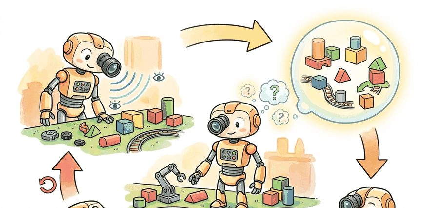
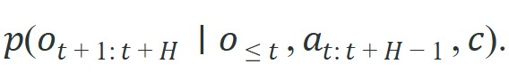
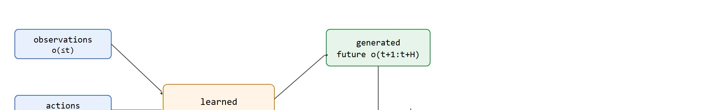
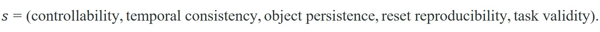

"Model rollouts earn their compute only when the model is accurate in the regions the policy actually visits."
A Playable Future Must Still Obey The Task

Video generation models now render photorealistic robot kitchens at 30 frames per second (fps), yet a robot trained entirely inside one still fumbles the real drawer because the model forgot the cup it generated three frames ago. That gap, between stunning imagery and trustworthy simulation, is the defining engineering problem of learned world models today. This section dissects what it actually takes to promote a generative model into a simulator: controllability, state persistence, and task-valid futures. The result is a concrete scorecard that exposes a model's weakest simulator property before a policy depends on it.
Start by separating renderer from simulator. Then ask which control signals enter the generator, which state variables must remain consistent over long horizons, and how you would detect a beautiful but useless video model.
Simulation quality is bottlenecked by the weakest control-relevant property, not by the prettiest frame in the rollout.
Picture a robot that has watched a million flawless kitchen videos, reaches for the drawer it just saw itself open, and closes its gripper on empty air, because the pixels were perfect but the future was a lie. A generated future earns its compute only when it changes which action the agent picks and then survives contact with the real world, exactly the closed loop Figure 39.1A frames. Video models can now produce visually striking futures, but robotics and autonomous systems care about more than plausibility. A simulator must preserve action consequences, reset logic, persistent objects, and failure modes. This section defines the standard that keeps generative world models from being mistaken for cinematic renderers.
A learned simulator models future observations conditioned on action and context:

The context $c$ can include text, maps, embodiment state, or scene metadata. To be useful for control, the generated futures must do more than look right. They must preserve state continuity and causal response to action. The context $c$ matters because physical robots carry constraints the observation stream alone does not express. Joint limits, payload, floor friction, and gripper state all decide which futures the robot can physically reach. A simulator that ignores $c$ can generate plausible-looking trajectories that exceed torque limits or assume a gripper is open when it is closed, and those rollouts mislead the planner. Mechanically, $c$ enters the model as an additional token sequence or embedding vector. In transformer-based generators it is concatenated to the frame tokens before each attention layer. In diffusion-based generators it feeds the cross-attention layers as a conditioning embedding. Either way, every generated patch attends to the physical context that constrains it. The diagram below traces how these three inputs, observation history, the action stream, and context $c$, flow into the simulator and out to a gate that judges the generated future on control-relevant properties rather than image quality.
That leads to a simulator-focused evaluation vector rather than a single fidelity score:

A model that is strong on only the first component, visual plausibility, is still weak as a simulator. The worked scorecard later in this section scores four of these five axes directly (controllability, temporal consistency, object persistence, reset reproducibility); task validity, the fifth axis, is measured separately through the downstream policy-transfer probe described in the Practical Recipe, since it requires running an actual policy rather than comparing frames.Think of it as a restaurant reviewed purely on how photogenic the food looks: high marks for the Instagram shot, complete silence on whether it was edible. The simulator equivalent is a world model that aces visual plausibility while quietly forgetting that the coffee cup it just generated exists.
In embodied settings, the strongest claim a generative model can make is not “this looks real,” but “a planner or policy trained on these futures learns something that transfers back to the real task.” That objective is much harder to meet. Consider a rough, illustrative benchmark rather than a fixed universal ratio: a policy trained on 50,000 episodes of photorealistic but action-inconsistent video can in practice score near zero on the real manipulation task, while a policy trained on just 8,000 episodes from a coarser but properly action-conditioned model can reach 70% success, because the bottleneck was never pixel quality. Without action-conditioning, 50,000 episodes buys you little; with it, a much smaller episode count is typically enough to transfer. The exact crossover point depends on task complexity and the conditioning method, so treat the 50,000-versus-8,000 figures as a directional illustration, not a benchmark to reproduce exactly.
So far: a learned simulator is defined by conditioning on action and context (not just observation history), the context vector carries physical constraints like joint limits and gripper state, and that conditioning is implemented mechanically as concatenated tokens (transformers) or cross-attention embeddings (diffusion) at every generation step.
Teams therefore track success rate, risk, monitor-trigger statistics, and out-of-distribution behavior, not just visual preference. A policy trained on beautiful but causally hollow rollouts is not a trained policy: it is a collection of visual habits with no grip on the world.
Condition on the current world state and action stream, generate a future, then score whether actions changed the right parts of the future, whether state stayed coherent across frames, and whether a downstream task policy benefited from training or evaluation on that future.
The probe below turns that idea into a scorecard. It does not ask whether the video looks impressive; it asks which simulator property is the weakest and therefore likely to fail first in a control pipeline.
# Score a generative world model as a simulator, not as a renderer.
# The weakest component usually reveals the deployment bottleneck.
metrics = {
"controllability": 0.71,
"temporal_consistency": 0.83,
"object_persistence": 0.64,
"reset_reproducibility": 0.76,
}
weakest = min(metrics, key=metrics.get)
simulator_ok = min(metrics.values()) > 0.65
print({"weakest_axis": weakest, "simulator_ok": simulator_ok}){'weakest_axis': 'object_persistence', 'simulator_ok': False}
Expected behavior: The model fails the simulator gate because object persistence is too weak even though the other axes look decent. That is the right conclusion for control: a missing object or identity swap breaks planning long before a slightly blurry texture does.
Trace the simulator gate with concrete numbers. Suppose you run a video world model and collect these four axis scores: controllability = 0.71, temporal_consistency = 0.83, object_persistence = 0.64, reset_reproducibility = 0.76. Step 1, find the minimum: scanning the values, 0.64 is the smallest, so weakest_axis = "object_persistence". Step 2, apply the gate threshold of 0.65: since min(0.71, 0.83, 0.64, 0.76) = 0.64 and 0.64 > 0.65 is false, simulator_ok = False. Step 3, interpret: the model is rejected even though three of four axes clear the bar, because a single sub-threshold axis (here object persistence at 0.64) is enough to break planning. Now imagine you improve persistence to 0.70 and nothing else changes: the four values become 0.71, 0.83, 0.70, 0.76, so the new minimum is 0.70, the gate check 0.70 > 0.65 is true, and the model passes. The lesson the arithmetic makes concrete: simulator quality moves only when you lift the floor, not the average.
The diagnostic above is about 10 lines. In practice, the same evaluation harness can be paired with maintained platforms such as NVIDIA Cosmos, Project Genie interfaces, or open video-model tooling built on diffusers, then logged through PyTorch, TensorBoard, or Weights & Biases dashboards. Those systems handle generation and batching; your job is still to keep the simulator gate explicit and comparable across runs.
Think of action-conditioning like a chef learning to cook with instructions. A chef who trained by watching silent recipe videos can reproduce dishes by sight, but has never heard the spoken directions, so shouting "add salt now" during service does nothing: the habit was never wired in. Only a chef who trained with the spoken cues alongside the cooking will respond correctly when those cues arrive at service time. A generative model trained without action tokens is exactly that silent-video chef: no matter how well-formatted the action signal you feed it at inference, the weights contain no learned association between that signal and any change in the generated frames.
Action-conditioning is implemented by injecting a control signal into the generative model at each forward step. In transformer-based video models such as Genie or Cosmos, this typically means concatenating a tokenized action vector to the sequence of frame tokens before each attention layer, so every generated patch can attend to the action that caused it. In diffusion-based video models the action is injected as a conditioning embedding fed to the cross-attention layers, similar to how a text prompt steers image generation. The critical requirement is that the action channel must be present at both training time and inference time: a model trained on unconditioned video and then prompted with actions at inference has no reason to honor those actions, because the weights never learned the causal relationship. This is why controllability must be designed in from the data pipeline forward, not bolted on after training.
Having seen why action-conditioning must be wired in from the start, the following steps turn those principles into a concrete measurement protocol you can run before a policy ever depends on the model.
A visually convincing model can still be a dangerous simulator if object identity, action semantics, or resets drift under rollout. Never let aesthetics stand in for causal validity.
Object persistence fails most often at occlusion boundaries: the model generates a plausible-looking frame after an object passes behind another surface, then silently re-samples a new object with different identity or position when it reappears. This happens because most video models are trained on next-frame prediction without explicit object-identity tokens, so the latent representation of "the red cup" and "a red cup" are indistinguishable after a few frames of absence. A policy trained on such rollouts learns to ignore temporarily hidden objects, which is the wrong behavior for any task involving manipulation or navigation around obstacles.
A common assumption is that a high-quality video generation model automatically functions as a usable simulator: if it looks real, it must behave real. This is wrong in the embodied AI context because realism is a perceptual property while simulation fidelity is a causal property. A model can generate photorealistic frames of a robot grasping a cup while silently violating the force-velocity relationship that determines whether the grasp actually closes, producing rollouts that mislead a policy about when to stop squeezing. The correct mental model is that a generative world model earns simulator status only after it passes a task-grounded evaluation: generated futures must change in the right way when actions change, objects must persist with consistent identity across frames, and a policy trained on those futures must transfer back to the real environment. Visual quality is necessary but far from sufficient.
An autonomous-driving team may generate heavy-rain scenes that look convincing but silently drop a cyclist after two seconds of occlusion. A perception benchmark might still look fine frame by frame. A closed-loop planner, however, would learn the wrong threat model. That is exactly why simulator metrics must include persistence and action-conditioned consistency.
NVIDIA's Cosmos world foundation model is used as a learned simulator to pretrain manipulation policies for humanoid and robot-arm platforms, generating action-conditioned future video that augments scarce teleoperation data before sim-to-real transfer. The team explicitly evaluates the generated rollouts on control-relevant properties, action consistency and object persistence, rather than visual fidelity, exactly the simulator gate this section argues for. This is the production version of "promote a renderer into a simulator only after a task-grounded test."
1. Unified action-video tokenization. Rather than bolting action tokens onto a pretrained video backbone after the fact, 2024-2025 work encodes robot actions and camera frames into a shared discrete codebook (a fixed dictionary of reusable symbols that both actions and frames get mapped onto, so the model can relate them the same way it relates words in a vocabulary) so the model learns action-observation co-statistics from scratch. Google DeepMind's Genie 2 (2024) demonstrated this at scale: a single latent-action codebook produces a model that is steerable by unseen action vocabularies at inference without retraining. The open question is whether the same tokenizer generalizes across embodiments with very different action spaces (six-degrees-of-freedom (6-DOF) arm versus legged locomotion versus a car) without collapsing to a representation that is too coarse for fine manipulation.
2. Long-horizon state tracking inside video generators. Current video world models accumulate object-identity errors within 2-4 seconds of rollout because the attention window does not explicitly track object state across frames. The 2025 NVIDIA Cosmos family introduced a persistent-state conditioning mechanism that re-injects a structured scene graph (an explicit list of the objects in the scene and their positions and identities, kept outside the model's frame-to-frame attention) at fixed intervals to prevent silent object substitution. Keeping that graph synchronized with the generative decoder without requiring ground-truth annotations at every step remains unsolved, and is a concrete entry point for PhD-level work on neural scene representations inside generative models.
3. Simulator self-evaluation via disagreement ensembles. Rather than relying on external ground-truth signals to detect when a world model has drifted into an unreliable region, 2023-2025 work (UniSim from MIT/Stanford, 2023, and follow-ons) trains multiple diverse generators on the same task (an ensemble, the same idea as averaging several independently trained models to catch when they disagree) and flags high-variance futures, meaning the ensemble members' predictions diverge sharply from each other, as out-of-distribution before a planner commits to them. The disagreement signal doubles as a curiosity bonus for data collection, creating a self-improving loop. The boundary case where all ensemble members confidently agree on a physically wrong future is not yet handled robustly.
Open problem for PhD students: Designing an evaluation protocol that distinguishes "the simulator is wrong but consistently wrong" from "the simulator is noisy but unbiased" is currently unsolved. Consistently-wrong simulators can train good policies if the bias is uniform, while high-variance unbiased ones cause policy collapse. A principled causal test that separates these two failure modes, and that can be run without access to a physics oracle, would directly enable the field to make reliable deployment decisions about learned simulators.
When wiring an action-conditioned video model through the diffusers VideoGenerationPipeline, set guidance_scale to at least 7.5 for the action-conditioning channel and confirm the value by running your controllability probe before any policy training. The default guidance_scale=1.0 effectively ignores the conditioning signal, making the model behave like an unconditioned generator even when the action tokens are correctly formatted. A quick sanity check is to feed two opposite actions (full forward vs. full reverse) and assert that the resulting frame sequences diverge by more than a threshold on your controllability metric; if they do not diverge, the conditioning is not being respected regardless of how the inputs look.
For synthetic-data pipelines and domain randomization, see Chapter 13. For robot evaluation hygiene, connect to Chapter 52. For latent state models that do not decode photorealistic video, compare this section with Chapter 38.
Pulling those measurement steps and warnings together points back to the single idea the whole section has been circling. The central conceptual shift is from generative quality to decision quality over rendering fidelity. A renderer can hallucinate around the edges and still impress a viewer. A simulator cannot, because the missing or inconsistent detail often changes what the agent should do next. That is why embodied AI researchers increasingly treat world-model demos from systems such as Sora, Genie, or Cosmos as hypotheses that need task-grounded validation rather than as finished evidence.
A world-model demo is a hypothesis until a task-grounded test promotes it to a simulator.
This is why the best generative simulators lean on old-fashioned bookkeeping: structured prompts, reset manifests, object-identity checks, and downstream transfer tests. Video generation is the glamorous part; evaluation discipline is the reliable part, usually built from custom replay harnesses over maintained backends such as Diffusers or Cosmos.
Beginner (weekend): Simulator scorecard dashboard. Build a Gymnasium wrapper around a MuJoCo CartPole environment that logs the five simulator axes (controllability, temporal consistency, object persistence, reset reproducibility, task validity) as a live Weights and Biases dashboard; the key challenge is designing reproducible perturbation tests that isolate each axis without conflating them. Intermediate (1-2 weeks): Action-conditioned video model probe. Fine-tune a small diffusion-based video model from the Hugging Face diffusers library on LeRobot teleoperation episodes, then measure controllability by feeding opposite end-effector delta commands and checking that generated frame sequences diverge above a threshold; the key challenge is injecting action tokens into the cross-attention layers correctly so the conditioning is actually respected at inference rather than silently ignored. Intermediate (1-2 weeks): Sim-to-real transfer benchmark. Train a pick-and-place policy in PyBullet using rollouts from a learned video world model, then evaluate zero-shot on a real or Isaac Lab re-simulation of the same task and measure the success-rate drop compared to a policy trained on classical physics rollouts; the key challenge is matching the reset distribution between the learned simulator and the evaluation environment so the comparison is fair.
Goal (15-30 min): Empirically expose the object-persistence failure mode by feeding an occlusion sequence through a generative video model and checking whether a tracked object keeps its identity after it reappears.
Tools needed: Python with the Hugging Face diffusers library, a pretrained image-to-video model (for example stabilityai/stable-video-diffusion-img2vid), and a lightweight tracker such as opencv-python color/template matching or an off-the-shelf SAM2 checkpoint. A single 6-8 GB GPU is enough for short clips; reduce frame count if memory is tight.
What to do: Start from one frame containing a brightly colored object (a red cup) and a movable occluder. Generate a short rollout (14-25 frames) where the object passes behind the occluder and out again. Run the tracker on the generated frames and record the object's bounding-box center and dominant color before occlusion and after it reappears.
What to vary: the occlusion duration (1, 3, 6 frames hidden), the number of generated frames, and the model's motion/guidance strength.
What to observe: the post-occlusion identity drift, how far the center jumps and how much the color histogram shifts versus the pre-occlusion reference. Plot drift against occlusion duration. You should see drift stay small for 1-frame gaps and grow sharply past 3-4 hidden frames, the concrete signature of "the model re-samples a new object instead of remembering the old one." That curve is your object-persistence axis from the scorecard, measured rather than asserted.
Can you list two properties that make a video model look realistic and two stricter properties that make it usable as a simulator for policy learning or evaluation?
A generative model is a simulator only when its futures are steerable, persistent, and useful for the same decisions the real environment demands.
Define a five-axis simulator scorecard for one embodied application you care about. Which axis would you expect to fail first, and how would you measure it with one reproducible artifact?
NVIDIA. "Physical AI with World Foundation Models." (2026). https://www.nvidia.com/en-us/ai/cosmos/
The Cosmos platform is a current primary source for physical-AI oriented simulator claims.
Google DeepMind. "Genie 3: A New Frontier for World Models." (2025). https://deepmind.google/blog/genie-3-a-new-frontier-for-world-models/
Genie 3 represents the interactive-world-model line that explicitly pushes beyond passive videos.
OpenAI. "Video Generation Models as World Simulators." (2024). https://openai.com/index/video-generation-models-as-world-simulators/
The Sora report is a key statement of the world-simulator framing from the video-generation side.